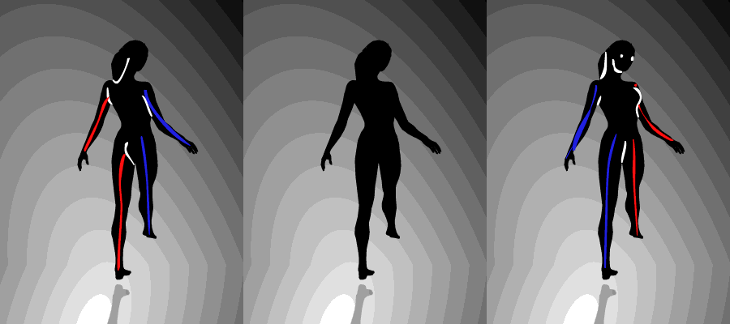

Seeing the Error of Your Ways
Reconociendo nuestros errores de percepción
Everyday Quirks
Our brains make us act in strange ways.
Waiting in Line
The Average Investor
What the Judge Ate for Breakfast (or Lunch)
"Our findings suggest that judicial rulings can be swayed by extraneous variables that should have no bearing on legal decisions."
137 Point Scale
“Exams will have a total of 137 points rather than the usual 100. This scoring system has no effect on the grade you get in the course, but it seems to make you happier.”
Framing
Visual Quirks
When it comes to visuals, things get stranger.
Judging a Face
Swayed by Brain Scans
Better Aim...
With a Fly!
Making Better Graphics
Using these mind oddities to build better graphics.
We Make Mistakes
Cartograms or Grid Maps
Orientation of a Map, Organization of a Table
Chernoff Faces
Body Parts
Revealing Our Minds to US
The long tradition of optical illusions.
Different Blues Look the Same
Straight Lines Look Curved
A Staggered Start Doesn't Look Fair
Ikea Nightmares
What About These Shades of Gray
Lines That Don't Look the Same Length
Tables that Don't Look the Same Size
A Dancer That Spins Both Ways
An Impossible Chocolate Bar

Blue or Gold?
Magic That Takes Advantage of Our Minds
We Follow Curves, but Jump to the End of Straight Lines
Teaching Us About Ourselves
Using graphics to teach us about our own minds.
Playing with Our Expectations
"We’ve chosen a rule that some sequences of three numbers obey — and some do not. Your job is to guess what the rule is."
Revealing our Limitations
"Pick a number from 0 to 100, with that number representing your best guess of two-thirds of the average of all numbers chosen in the contest.
Teaching Us a Lesson
"I'll Move if Less than 30% of my neighbors are like me"
Thanks!
@lenagroeger